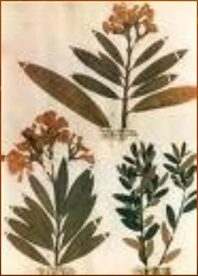

Módulo 08 · 25 minutos
El herbario: tu archivo de referencia
Al terminar, vas a poder preparar una muestra vegetal, completar su etiqueta y elegir un criterio para incorporarla a un archivo de referencia.
Una planta sale del paisaje
En el campo, una planta tiene volumen, humedad, posición y contexto. Al recolectarla comienza una carrera contra el deterioro. Si se seca sin cuidado, pierde hojas; si se prensa mal, oculta caracteres; si se guarda sin datos, se convierte en una planta anónima.
Un herbario detiene parte de esa pérdida. No conserva la planta viva: conserva una evidencia que puede volver a observarse, compararse y ordenarse.
Qué es un herbario
Un reúne plantas preparadas para consulta. Cada ejemplar funciona como registro de una especie en un lugar y un momento determinados.
El valor no está solamente en la planta prensada. La etiqueta, la forma de montaje y el orden del conjunto hacen posible recuperar la información. Un ejemplar sin procedencia ni fecha pierde gran parte de su utilidad.
Recolectar pensando en el futuro
La muestra debe representar caracteres útiles para identificar la planta. Siempre que sea posible conviene incluir tallo, hojas y estructuras reproductivas como flores o frutos. Si una planta es grande, puede plegarse en zigzag antes del prensado. Si posee hojas con diferencias visibles entre ambas caras, algunas deben colocarse con el haz hacia arriba y otras con el envés visible.
La recolección y los datos deben permanecer unidos desde el comienzo. Un número de campo permite vincular la muestra con sus anotaciones aun antes de terminar la identificación.
Datos del ejemplar
Nombre común, nombre botánico y familia cuando estén determinados.
Lugar y ambiente
Localidad, referencia geográfica y características del sitio.
Tiempo
Fecha de recolección.
Personas
Recolector —abreviado «leg.»— y persona que realizó la determinación —«det.»—.
Observaciones
Color, porte, aroma u otros rasgos que podrían perderse al secar.
Prensar para conservar información
La planta se acomoda entre papeles absorbentes. La presión la mantiene extendida y el cambio periódico de los papeles húmedos facilita el secado. El objetivo no es aplastarla sin criterio, sino mostrar sus caracteres dentro de una superficie manejable.
Durante el armado conviene evitar superposiciones innecesarias. Flores y hojas importantes deben quedar visibles. Las partes que se desprenden —semillas, frutos pequeños o fragmentos— pueden conservarse en un sobre asociado al mismo pliego.
La humedad es enemiga del proceso. Si los papeles permanecen mojados, aumenta el riesgo de deterioro. Revisar y reemplazar el material absorbente forma parte de la preparación, no es un detalle posterior.
Montar sin tapar la planta
Una vez seco, el ejemplar se dispone sobre una cartulina de aproximadamente 23,5 por 39 centímetros. Se fija con tiras en puntos resistentes: entrenudos, pedicelos o pedúnculos. Las tiras no deberían cubrir hojas ni flores, porque justamente son las estructuras que necesitamos estudiar.
La etiqueta se incorpora al pliego y el sobre para partes sueltas queda unido al mismo conjunto. Así, muestra y datos forman una sola unidad.

Leé el pliego como un documento
Observá dónde se encuentra la planta y cuánto espacio libre queda alrededor. Buscá los puntos de fijación: ¿atraviesan hojas o flores, o se apoyan en zonas resistentes? Imaginá ahora la etiqueta. ¿Qué dato necesitarías leer primero para comparar este ejemplar con otro?
Proteger y ordenar
Antes de incorporarse a la colección, el material puede someterse a frío para controlar organismos que podrían dañarlo. El procedimiento descrito consiste en mantenerlo cuatro días a −32 °C. Luego el pliego se protege con una y se almacena en un sitio seco.
Una colección solo funciona si tiene un criterio de orden. Los pliegos pueden organizarse taxonómicamente, por procedencia geográfica o alfabéticamente. Lo importante es elegir una regla y sostenerla para poder encontrar cada registro.
El archivo también puede tener una versión virtual. Fotografías y datos permiten consultar el conjunto sin manipular continuamente los ejemplares. La imagen digital amplía el acceso, pero depende de un registro físico bien preparado y correctamente identificado.
Actividad · Diseñá tres fichas conectadas
Prepará el borrador de tres registros de herbario. Cada uno debe incluir:
- nombre común y nombre botánico;
- localidad y ambiente;
- fecha;
- recolector y determinador;
- parte de la planta representada;
- observaciones que podrían perderse con el secado;
- criterio con el que se ordenará dentro de la colección.
Al terminar, revisá si otra persona podría encontrar una ficha, reconocer su muestra y comprender de dónde provino sin hacerte preguntas.
Ya no miramos una planta anónima
La Parte 2 comenzó con dos hojas sin nombre. Termina con una muestra descrita, identificada, montada y ubicada dentro de un archivo. Aprendimos a conservar la identidad de la materia vegetal. En la próxima parte, esa planta entra en el cultivo: suelo, agua, cortes y cosecha empezarán a modificar la calidad de lo que podrá obtenerse de ella.
Guardá esta estación
Cuando puedas explicar la idea central con tus propias palabras, marcá el módulo como completado.